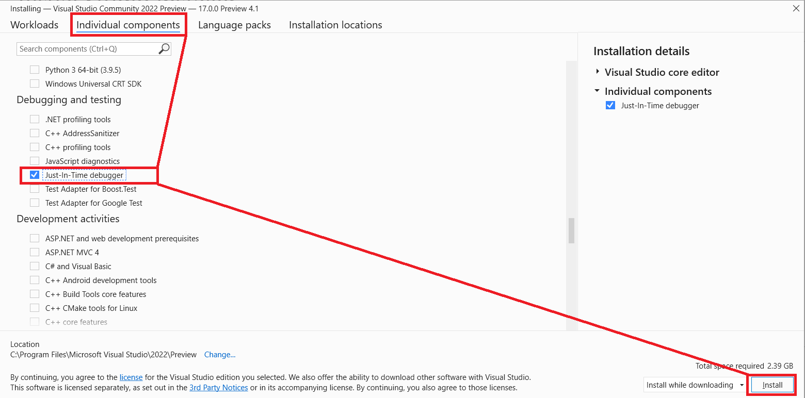
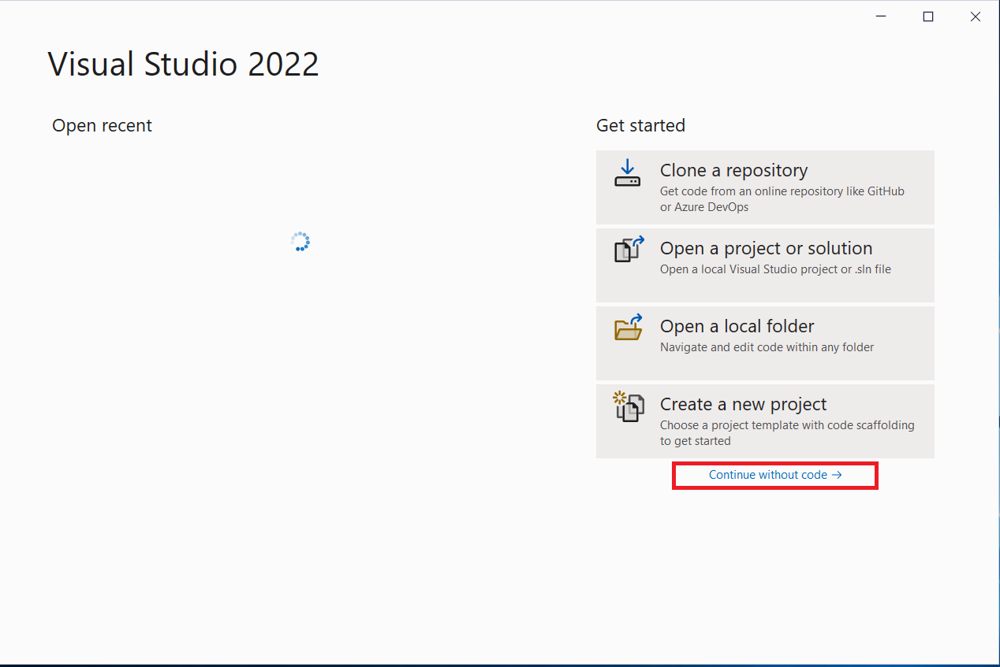
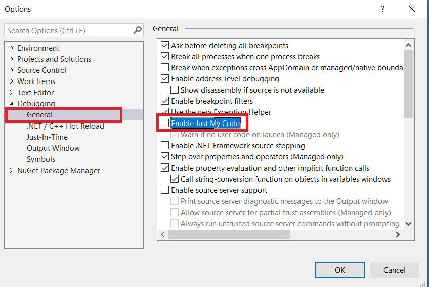
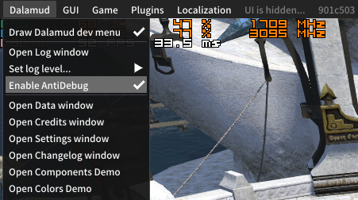
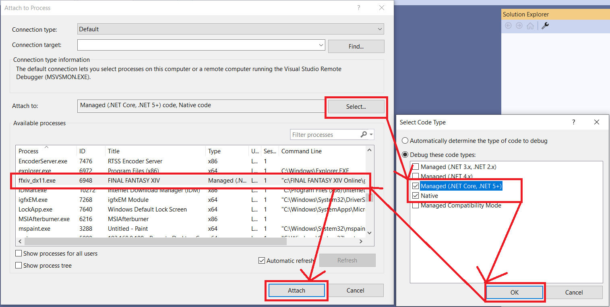
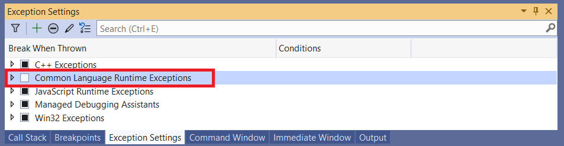
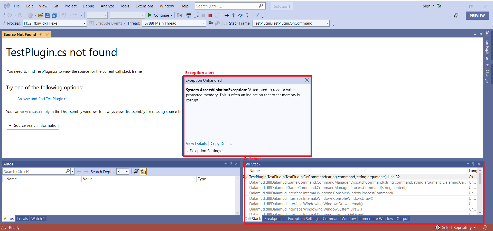

Using Visual Studio debugger to figure out game crash reason
Installing Visual Studio
First of all, you need to install Visual Studio. In this guide I will be using Visual Studio 2022, however 2019 will work as well.
Download it here: https://visualstudio.microsoft.com/vs/preview/#download-preview
Select "Visual Studio Community" and run downloaded executable. Wait until visual studio installer gets installed. Then go to "Individual components", select "Just-In-Time debugger" and press "Install" button. You only need this component, however, if you wish, you may install any additional ones.

If it gives you any confirmations, just press "Continue". Now wait until it will install. Reboot if it will ask you to do so.
Configuring Visual Studio
Before you will start debugging, you will need to perform some configuration. Launch Visual Studio and it will prompt you to log in, you may do so or skip.
Select "Continue without code" on starting screen.

Navigate to "Debug - Options - Debugging - General" and disable "Enable Just My Code" option. Don't forget to press "Ok" button.

Configuring Dalamud
Before you will be able to attach a debugger, you will need to disable anti-debug protection. Type /xldev in game, open "Dalamud" menu and select "Enable Anti-debug" menu item if it's unchecked.

Attaching a debugger
Navigate to "Debug - Attach to process". In "Attach to" section click on "Select" button, check "Debug these code types" checkbox, and check "Managed (.NET core, .NET 5+)" and "Native" checkboxes. Press "Ok" button and then find "ffxiv_dx11.exe" process in process list. Select it and click "Attach" button.

Debugging session should begin now. Navigate to "Debug - Windows - Exception settings" and uncheck "Common Language Runtime Exceptions". We don't need them.

Crash
When a crash occurs, you will see it in Visual Studio. It may prompt you to load source or PDB file for crashed module, in that case just close that window.
You will see something like this:

You can close exception alert modal window. We don't need it. Look on a Call stack. If you don't see Call stack window, navigate to "Debug - Windows - Call stack". You can see crash happened on a Test plugin function call. Usually there will be some plugin mentioned there, but not always.
Generally, try to disable that plugin and reproduce the crash again. If you can confirm that the crash stopped happening, please report the crash to a plugin developer.
Reporting a problem
You will need to include following things into your report:
- Call stack
- Right click any call stack entry, select "Select all", right click again, "Copy" (or Ctrl+A - Ctrl+C).
- Exception
- Navigate to "Debug - Windows - Output", find last error and copy it.
- It will look like this.
- Base address
- Please include process base address. Navigate to "Debug - Windows - Modules", find
ffxiv_dx11.exe, right click on it, select "Copy". The information copied will contain process base address. Please note that you must copy base address from the same game session, base address changes every game restart. - It will look like this.
- Please include process base address. Navigate to "Debug - Windows - Modules", find
- Dalamud log
{kind=link}
{kind=link}
Exiting debugger
To detach a debugger, navigate to "Debug - Stop debugging".
[Return to the top](#Installing Visual Studio)
Return to the main FAQ